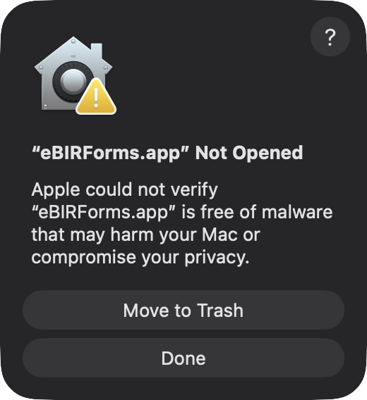
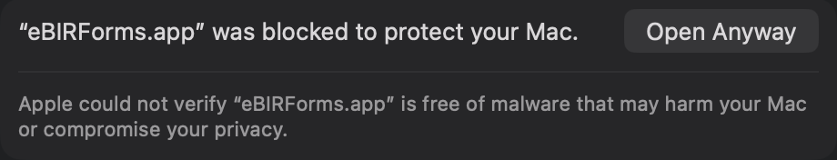
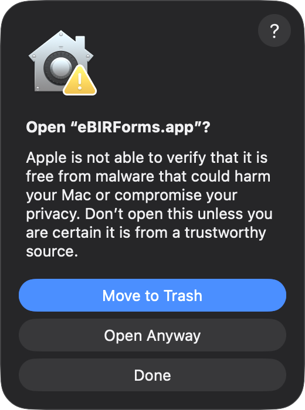

Drag eBIRForms into Applications
1
Open eBIRForms. Click
Done
.

2
System Settings › Privacy & Security. Click
Open Anyway
.

Only once.
After this it opens normally.
macOS 12 to 14:
right-click the app, then Open.
3
Click
Open Anyway
, then your password.
